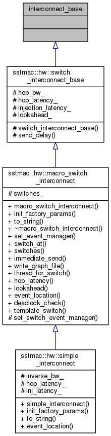
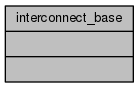

SST/macro
Main Page
Related Pages
Namespaces
Classes
Files
Class List
Class Index
Class Hierarchy
Class Members
interconnect_base Class Reference
Inheritance diagram for interconnect_base:

Collaboration diagram for interconnect_base:

The documentation for this class was generated from the following file:
sstmac/hardware/interconnect/
switch_interconnect.h
Generated on Fri Sep 16 2016 16:24:38 for SST/macro by
1.8.6